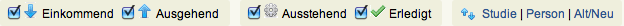

Nachrichtenübersicht¶
In der Nachrichtenübersicht finden Sie alle Ihre Nachrichten, d.h. nicht nur zu einer bestimmten Studie (wie im Nachrichten-Reiter jeder einzelnen Studie), sondern zu allen Ihren Studien. Die Nachrichten sind zur besseren Übersicht chronologisch gelistet.
Die Nachrichtenübersicht bietet Ihnen alle Sortierungsmöglichkeiten, Funktionen und Filter, die Sie zur Bearbeitung Ihrer Nachrichten benötigen und welche die Suche nach einer oder mehreren Nachricht/en erleichtern sollen:
- Nachrichtenauflistungen
- Alt/Neu
- Neue Nachricht schreiben
- Nachricht/en lesen/beantworten
- Nachrichtenstrang erledigt
- Nachrichtenstrang un/gelesen
Nachrichtenauflistungen¶
Die Filter  ermöglichen Ihnen eine Auflistung von Nachrichten nach Ihren Kriterien. Aktivieren Sie jeweils jenen Filter, nach dem Sie Ihre Nachrichten sortiert haben wollen und deaktivieren Sie alle anderen Filter.
Beachten Sie, dass zumindest jeweils ein Häkchen bei Einkommend/Ausgehend bzw. Ausstehend/Erledigt aktiviert sein muss, damit Nachrichten angezeigt werden.
Alt/Neu¶
Klicken Sie auf Alt/Neu, um Ihre Nachrichten von der jüngsten abwärts zur ältesten Nachricht zu sortieren.
Neue Nachricht schreiben¶
Um eine neue Nachricht zu erstellen, wechseln Sie in den Reiter Nachrichten der betreffenden Studie und klicken Sie in dessen Unterreiter Meine Nachrichten auf den Knopf Neue Nachricht. Nur hier können neue Nachrichten verfasst werden. Lesen Sie mehr dazu in der Hilfe-Seite Neue Nachricht.
Nachricht/en lesen/beantworten¶
Wählen Sie unter Betreff einen Nachrichtenstrang und klicken Sie auf den Link. Über Hinweise zur weiteren Benutzung informiert Sie die Hilfe-Seite Nachrichtenstrang lesen/beantworten. Den Link finden Sie im Menüpunkt Nachrichten im Seitenmenü und in jedem Nachrichten-Reiter einer eingereichten Studie.
Nachrichtenstrang erledigt¶
Klicken Sie auf  , um den Nachrichtenstrang als für Sie erledigt zu markieren. Benutzen Sie das Häkchen direkt im Nachrichtenstrang, in der Nachrichtenübersicht oder in der Übersicht.
, um den Nachrichtenstrang als für Sie erledigt zu markieren. Benutzen Sie das Häkchen direkt im Nachrichtenstrang, in der Nachrichtenübersicht oder in der Übersicht.
Nachrichtenstrang un/gelesen¶
Ungelesene Nachrichten werden in der Box Empfangene/Zu beantworten in der Übersicht mit einem  markiert.
markiert.